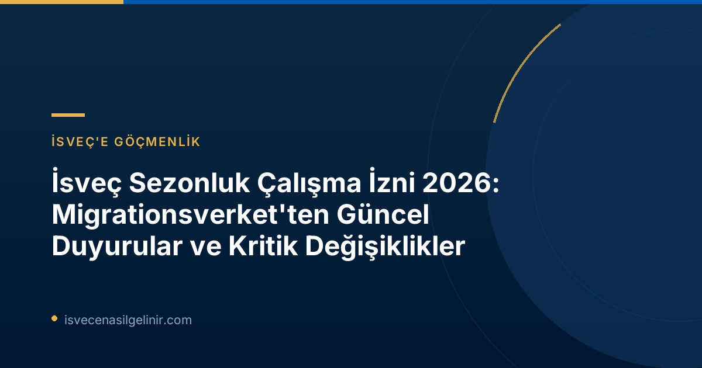

2026 Yılında İsveç Sezonluk Çalışma İzinleri: Genel Durum
İsveç Göçmen Dairesi Migrationsverket, 2026 yılında sezonluk işler için toplamda 3.400 çalışma izni başvurusu onaylarken, yaklaşık 1.600 başvuruyu reddetti. Bu izinler genellikle tarım, ormancılık ve meyve toplama gibi sektörlerdeki kısa süreli istihdamlar için verilmektedir. Her yıl yaklaşık 5.000 kişi İsveç'te sezonluk işlerde çalışmak üzere oturma izni başvurusu yapmaktadır.İzin Verilen ve Reddedilen Başvurular
Migrationsverket, bu yıl önceki yıllara kıyasla yüksek sayıda başvuruyu olumlu sonuçlandırarak, bu sektörlerdeki iş gücüne olan ihtiyacı karşılamaya devam ettiğini gösterdi. Ancak reddedilen 1.600 başvuru, başvuru sürecindeki titizliği ve Migrationsverket'in belirlenen standartlardan ödün vermediğini ortaya koymaktadır.Riskli Sektörler ve İşgücü Sömürüsüyle Mücadele
Sezonluk iş sektörlerinin bazıları, özellikle işgücü sömürüsü riski taşıyan sektörler arasında yer almaktadır. Migrationsverket, bu durumun önüne geçmek için diğer devlet kurumları (polis, İş Güvenliği Kurumu, Vergi Dairesi ve belediyeler dahil) ile işbirliği içinde çalışmaktadır. Migrationsverket bölüm şefi Merima Ilijašević, yasalara ve iyi çalışma koşullarına uyan birçok şirket olmasına rağmen, düzenli olarak suistimallerin de ortaya çıktığını belirtmiştir. Bu durumlar, sezonluk çalışma başvurularının reddedilmesine neden olabilir.Sezonluk Çalışma İzni Başvurularında Ret Nedenleri
Sezonluk çalışma izni başvurularının reddedilmesinin birden fazla nedeni bulunmaktadır. Migrationsverket, başvuruların değerlendirilmesi sırasında hem işverenin hem de çalışanın belirli kriterleri karşılamasını bekler.Ekonomik Yetersizlikten Şirket Kusurlarına
Reddedilme sebeplerinden bazıları, şirketlerin çalışanları istihdam etme konusundaki ekonomik yeterliliğindeki eksiklikler veya çalışma koşullarındaki yetersizlikler olabilir. Bir sendika sözleşmesi yoksa, maaş ve diğer koşulların İsveç'teki meslekteki kollektif sözleşmelere veya uygulamalara uygun olması gerekmektedir. İşverenlerin, çalışanlara uygun maaş ve sosyal hakları sağlayabilecek finansal güce sahip olmaları beklenir.Yanlış Reklam ve Çalışma Koşulları
Başka bir ret nedeni ise iş ilanlarının doğru şekilde yayımlanmamasıdır. İşe alım sürecinin İsveç'in AB içindeki taahhütlerine uygun olarak, hem İsveç'te hem de Avrupa Birliği genelinde en az 10 gün boyunca duyurulması gerekmektedir. Ayrıca, çalışanların konaklama ve sağlık sigortası gibi temel gereksinimlerinin karşılanmasında eksiklikler bulunması da başvuruların olumsuz sonuçlanmasına yol açabilir.İsveç'teki Sezonluk İşler ve Başvuru Sahibi Profili
İsveç'teki sezonluk işler, genellikle kısa süreli olup, yılın belirli dönemlerinde yoğunlaşan sektörlerde yoğunlaşmaktadır.Hangi Sektörleri Kapsıyor?
Sezonluk istihdamlar çoğunlukla yaz aylarında tarım, ormancılık, meyve toplama, turizm ve hizmet sektörlerinde yer almaktadır. Yaklaşık 200 İsveçli şirket, AB dışından sezonluk işçi istihdam etmektedir.Kimler Başvuruyor?
Sezonluk işçiler dünyanın her yerinden gelmekle birlikte, büyük çoğunluğu Tayland vatandaşlarından oluşmaktadır. Taylandlılar, sezonluk işgücünün yaklaşık %90'ını oluşturmaktadır.Bärplockning (Meyve Toplayıcılığı) İçin Yeni Kurallar ve Önemli Değişiklikler
Meyve toplayıcılığı, İsveç'teki sezonluk iş piyasasının önemli bir parçasıdır ancak bu yıl önemli bir yasal değişikliğe sahne olmuştur.Haziran 2026 İtibarıyla Orman Bärplockning Yasağı
Uzun yıllardır sektördeki tekrarlayan suistimaller nedeniyle Migrationsverket, meyve toplayıcılarından gelen başvuruların çoğunu reddetmekteydi. Haziran ayında yürürlüğe giren yeni düzenlemelerle birlikte, ormanda meyve toplayıcılığı işinin, istihdam koşullarından bağımsız olarak artık çalışma izni hakkı sağlamayacağı belirtilmiştir. Bu değişiklik, özellikle ormanlık alanda bireysel olarak meyve toplayıp satan kişileri etkilemektedir.AB Sezonluk İstihdam Direktifi Kapsamındaki İstisnalar
Ancak Merima Ilijašević'in belirttiğine göre, meyve toplayıcılığı yapan çoğu kişi AB'nin Sezonluk İstihdam Direktifi kapsamında izin başvurusu yaptığı için bu yasağın dışında kalmaktadır. Bu yönerge altında yapılan başvurular, bireysel çalışma izni başvurularından farklı kriterlere tabidir. Bu yıl Migrationsverket, AB'nin sezonluk istihdam direktifi kapsamında yaklaşık 1.500 meyve toplayıcılığı çalışma izni başvurusu değerlendirmiş; bunların 950'sini onaylarken, 600'ünü reddetmiştir. Bu başvuruların tamamı Tayland vatandaşlarına aittir.AB Sezonluk İstihdam Direktifi Kapsamında Temel Şartlar
| Şart Kriteri | Detaylar |
|---|---|
| **Maaş ve Çalışma Koşulları** | Sözleşmede belirtilen maaş, sigorta ve diğer çalışma koşulları İsveç kollektif sözleşmeleri veya sektördeki uygulamalardan daha kötü olmamalıdır. Tam zamanlı çalışanlar için belirlenen asgari ücrete eşit veya daha yüksek bir maaş garanti edilmelidir, bu durum kısmi zamanlı çalışma için de geçerlidir. |
| **Konaklama ve Sağlık Sigortası** | Çalışma izni süresince uygun standartta bir konaklama ve tam teşekküllü bir sağlık sigortasına sahip olunmalıdır. |
| **İşe Alım Süreci** | İşe alım prosedürü, İsveç'in AB içindeki taahhütlerine uygun olmalı ve iş ilanları hem İsveç'te hem de AB içinde en az 10 gün boyunca yayınlanmış olmalıdır. |
| **Geri Dönüş Niyeti** | Mevsimlik çalışma izni süresi sona erdikten sonra kendi ülkesine geri dönme niyeti açıkça gösterilmelidir. |
| **AB Dışı İkamet** | Başvuru sahibinin AB içinde ikamet etmemesi gerekmektedir. |
İsveç'e uzun vadeli göç hedefleri olanlar için bu direktifler önemli başlangıç noktaları sunarken, gelecekteki İsveç Vatandaşlık Testi süreçleri için de temel oluşturabilir.
Gelecekteki Adımlar ve Migrationsverket'ten Mesajlar
Migrationsverket, riskli sektörlerdeki suistimallerle mücadele çabasının devam edeceğini vurgulamaktadır. Özellikle kötüye kullanım belirtileri ortaya çıktığında denetimlerin artırılacağı belirtiliyor. Merima Ilijašević, işgücü sömürüsünün bir toplum sorunu olduğunu ve tüm kurumların birlikte hareket ederek bu durumu engellemesi gerektiğini ifade etmiştir. Ortak çabalarla İsveç işgücü piyasasındaki kötüye kullanımların daha hızlı önlenebileceğinin altı çizilmiştir.İsveç'te Vatandaşlık Yoluna Adım Atın!
İsveç'e göçmenlik sürecinizde veya uzun vadeli hedeflerinizde İsveç vatandaşlığı almak istiyorsanız, İsveç Vatandaşlık Sınavı hakkında bilmeniz gereken her şeyi sitemizde bulabilirsiniz. Sürece doğru bir başlangıç yapın ve İsveç yaşamına tam entegrasyon için ilk adımı atın.